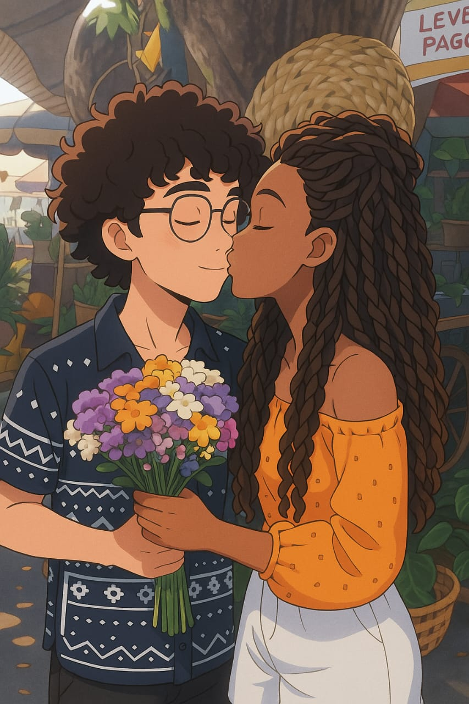
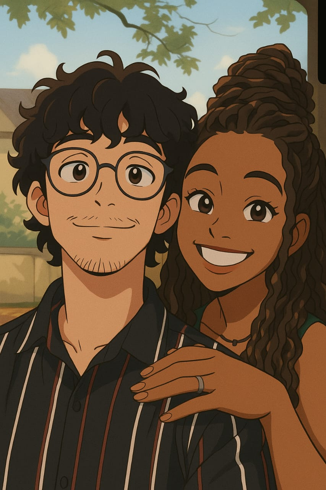

💌 Para o meu princeso
Estamos juntos há: dias!
meu amor, eu não tenho palavras para descrever o quanto eu te amo e o quanto você é especial para mim. Você é tão incrível que não consigo imaginar minha vida sem a tua presença e qualquer menção à sua perda já me deixa extremamente desestabilizada.
Sabe quando a gente é pequeno e fica chorando atoa com o dia que perderemos nossos pais? Não sei se isso é algo pessoal kkkk, mas já me peguei pensando nisso. Você é assim para mim, só de pensar nisso me dá vontade de chorar.
Eu te amo tanto, cada detalhe seu, seu sorriso, suas gracinhas, sua personalidade, sua inteligência, seu jeito de ser, seus cabelos, seus olhos, tudo tudo tudo.
Quero dizer que estou aqui com você sempre, para te apoiar, para ficar feliz pelas suas conquistas, para cuidar e te educarrr, afinal, sou sua segunda mãe kkkkkkkkk.
Enfim enfim, cada momento longe de você é um tormento e sinto muitas saudades, mas mesmo longe, te sinto (nossa primeira polaroid).
Eu te amo, meu princeso, meu little moço, meu pequeno, momo, momozi, I Love You So Mutch 💖

